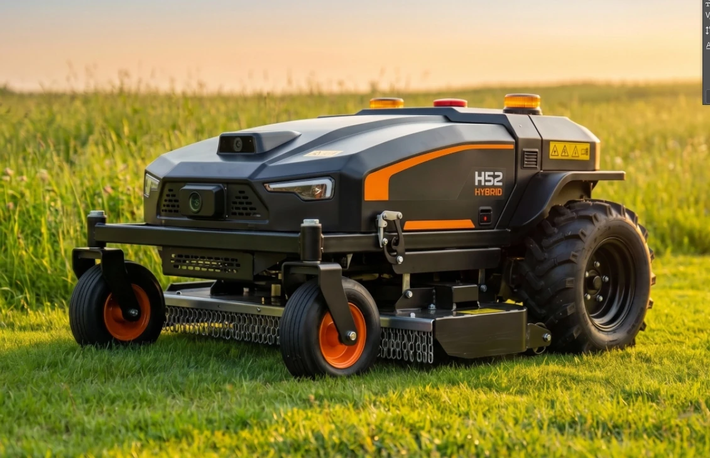

Agricultural Robot
面向大型农场及园林场地，VT-Mow 自主农业机器人研发中，预计 2027 年推出

大型农场及园林场地面临较高的劳动强度与复杂导航问题，是车规级技术延伸应用的重要方向。
寅家科技依托 VT-Navigara 技术平台，正在研发 VT-Mow 系列自主农业机器人。
首款产品为自主割草机器人，预计于 2027 年推出；
后续计划逐步拓展播种、喷洒及采收等作业能力。
VT-Mow 结合地磁惯性导航与基于鸟瞰图的 SLAM，在卫星信号间歇性中断时，维持非铺装地形上的定位与覆盖路径规划，支持农业机器人在复杂开放区域连续作业。
复用为汽车应用开发的视觉感知、定位导航、覆盖路径规划及运动控制技术，使机器人能够规划连续作业路径，并按照地形与任务需求调整运动控制。
Technology Reuse